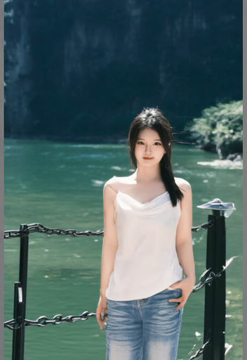

输入
Edit Instruction
Reference order: 1 = Source A. Image 2 is the edit. Change the pose of one person. Judge the visible change of pose. The exact target skeleton is not provided. Preserve original identities, clothing, hairstyle and body proportions. Preserve the scene and background from Source A. Keep natural anatomy and clean details.
Source Image（Source A）
靠在链条栏杆上 · 侧身回望
Edited Image（候选 0 · initial）
正面站立 · 手叉腰
参考构成（本样本）
· 参考图：Source A RGB（rgb 模式，不附骨架）
· 候选：352×512，按 Canvas 有效区裁切后送入
· 指令：56 词，含“保留身份/服饰/背景”约束
· 同组两候选共享同一条件与 SHA
· 候选：352×512，按 Canvas 有效区裁切后送入
· 指令：56 词，含“保留身份/服饰/背景”约束
· 同组两候选共享同一条件与 SHA
无定位整体打分对照 · EditScore 类
Reasoning
直接看整张图给印象分：姿态确实变了、人物和背景看起来还在，于是给高分。
但没有先定位“改哪了”，就无法回答： 变化区域是否只落在人身上？没让改的背景/服饰有没有被动？ 发饰的细微变化、链条位置偏移这类局部证据会被整体印象淹没。
但没有先定位“改哪了”，就无法回答： 变化区域是否只落在人身上？没让改的背景/服饰有没有被动？ 发饰的细微变化、链条位置偏移这类局部证据会被整体印象淹没。
结构性缺陷：分数无法回溯到具体区域，错判时无法定位原因；对“姿态改对但细节被改坏”这类样本天然不敏感。
SCORES（无法给出区域级证据）
Instruct Following?
Source Consistency?
✕ 不可核查 · 易失准
为什么需要区域定位
姿态编辑的“对”与“错”都发生在局部：躯干/四肢要变，脸、衣服、背景不该变。
只有先把编辑区域框出来，再分别判断“改动是否符合指令”“未改动是否被保住”，分数才可解释。
会被整体分掩盖的三类局部问题
1. 改动越界：姿态改了，但发饰/配饰跟着变，整图看仍“很像”。
2. 保留区漂移：背景链条位置、机位轻微偏移，和主体改动混成一个分。
3. 无法归因：扣分说不清落在哪个区域，RL 里无法转成可靠优势。
2. 保留区漂移：背景链条位置、机位轻微偏移，和主体改动混成一个分。
3. 无法归因：扣分说不清落在哪个区域，RL 里无法转成可靠优势。
定位后的判定标准
① 改动区：bbox 内的变化是否完整实现指令 → IF
② 保留区：bbox 外的身份/服饰/背景是否未被改动 → CON
③ 画质：解剖、光影、伪影 → NAT / ART
② 保留区：bbox 外的身份/服饰/背景是否未被改动 → CON
③ 画质：解剖、光影、伪影 → NAT / ART
SpatialReward-8B + 编辑区域定位（我们的实现）Ours
Edit Region · Explicit Grounding（模型真实输出 bbox_2d，0–1000 坐标）
<|bbox_1|> person
候选 0 · initial ｜ bbox [356, 308, 788, 998]

<|bbox_1|> person
候选 1 · regional_S3 ｜ bbox [333, 308, 777, 998]
两路独立推理SC：参考 + 指令 + 候选 → IF / CONPQ：只看候选 → NAT / ART
Reasoning（模型原文 · 引用 <|bbox_1|> 定位后判断）
候选 0：The edit changes the <|bbox_1|>person’s pose: she is no longer leaning on the chain and is now standing upright with arms down. Clothing, identity, and background remain consistent. <|global|> The instruction to change the pose is fully satisfied. The background and the person's identity are well-preserved, with only a minor unintended change in the hair accessory.
候选 1：The edit changes the <|bbox_1|>person’s pose: she is now centered, facing more forward, with arms down and one hand in the pocket, versus leaning on the chain with crossed arm in the source. <|global|> Clothing, identity, and body proportions are preserved. Background and scene remain consistent, with only minor framing/chain placement differences.
候选 1：The edit changes the <|bbox_1|>person’s pose: she is now centered, facing more forward, with arms down and one hand in the pocket, versus leaning on the chain with crossed arm in the source. <|global|> Clothing, identity, and body proportions are preserved. Background and scene remain consistent, with only minor framing/chain placement differences.
SCORES（0–25 · 归档 smoke 结果，official 融合）
候选 0 · initialIF 25 ｜ CON 25 ｜ NAT 18 ｜ ART 15 → reward 0.9203
候选 1 · regional_S3IF 22 ｜ CON 23 ｜ NAT 18 ｜ ART 15 → reward 0.8429
✓ 区域证据可回溯 · 可解释
SC 语义一致性
有序参考 + 指令 + 候选；先输出 edit_region 再打分，返回 IF / CON
PQ 画质
只看候选图；返回 naturalness / artifacts
融合模式
official SC.8×PQ.2；visual-linear .40CON+.30NAT+.30ART；complementary CON/25训练接入
默认权重 0.25；整组评分齐全才进 GDPO；失败即停该批